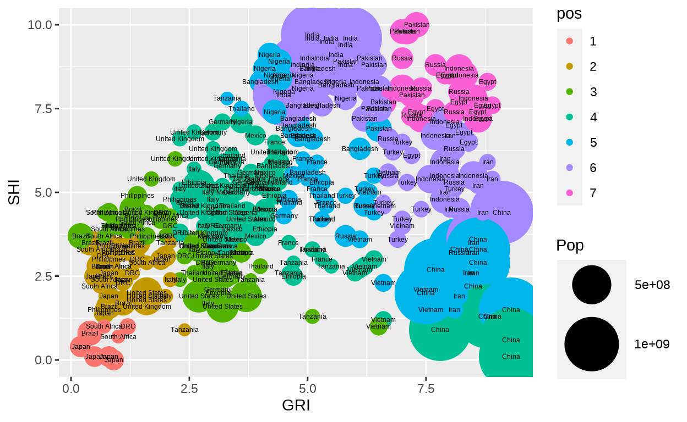
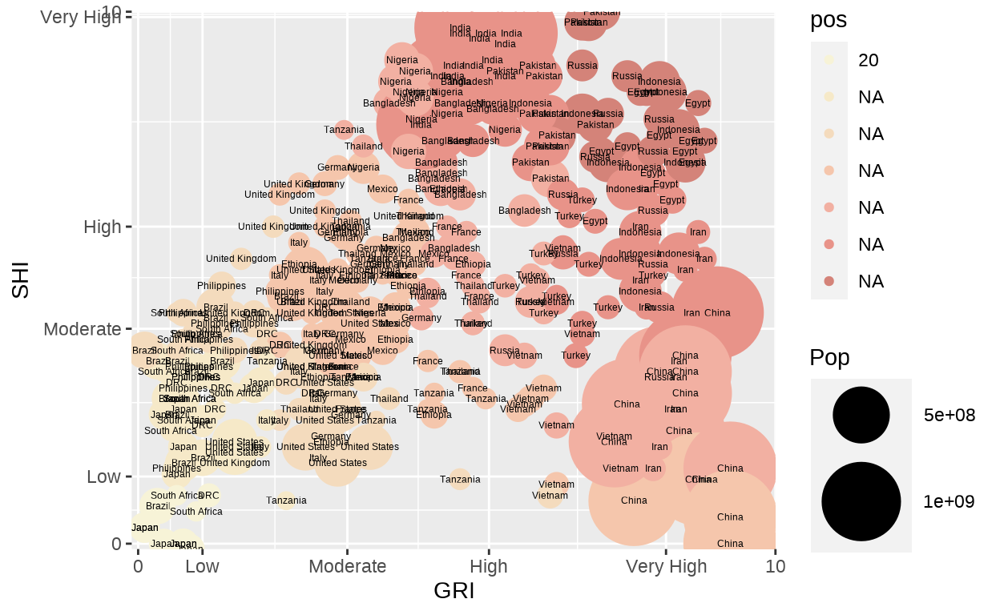
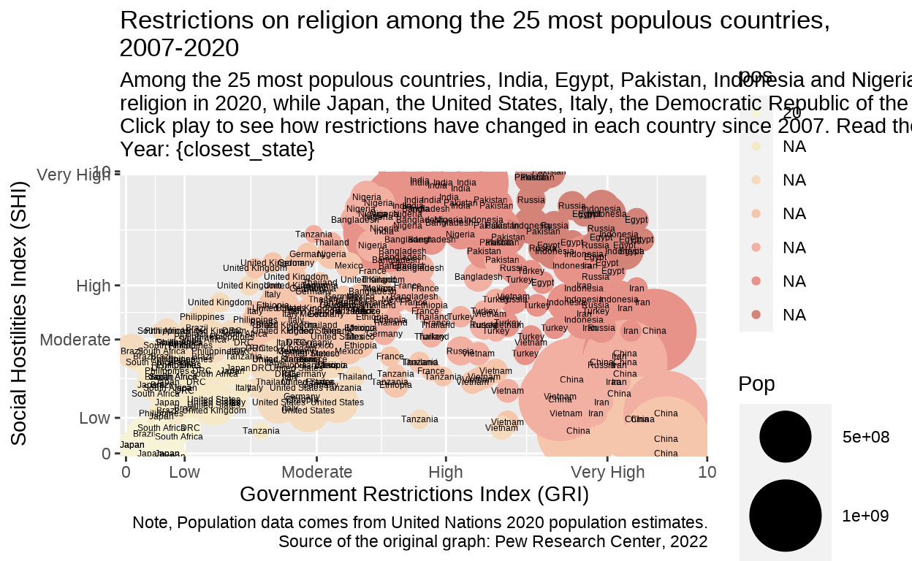
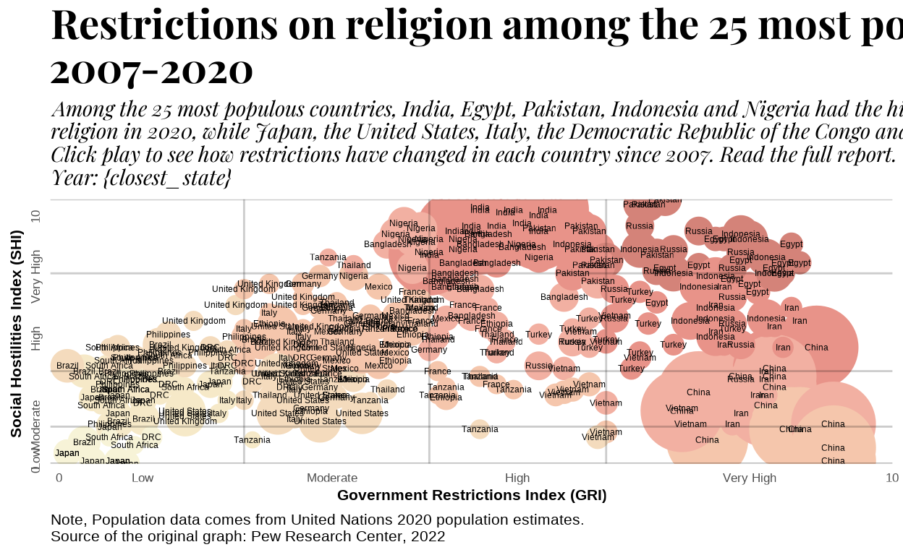

The original graph
The graph to replicate was originally created by the Pew Research Center. It is an interactive graph depicting the evolution in time of two measures related to religious conflicts: Goverment Restrictions Index (GRI) and Social Hostilities Index (SHI). The 25 most populous countries are included in the graph. Our goal: to replicate it as closely as possible.
Set up and libraries
As with any other project, we have to load some the libraries that will be needed to complete the graph.
Prerequisites for the graph
Adapting the database
First, we have to load the data. In this case, it has been directly compiled from the Pew Research Center.
Some columns are going to be renamed and/or modified to make easier the coding. Also, a new variable is created to give later the colour to the bubbles (geom_point()) via the case_when() function.
religion.df <- read_delim("rel.csv", show_col_types = FALSE)
religion <- religion.df %>% transmute(
year = as.integer(`Year `),
GRI = GRI,
SHI = SHI,
Country = Country,
Pop = `Population Size `) %>%
mutate(
# The position is numerically defined according to the score in the variables
pos = case_when(
(GRI < 2.3 & SHI < 1.4) ~ 1,
((GRI >= 2.3 & GRI < 4.5) & SHI < 1.4) ~ 2,
((GRI >= 4.5 & GRI < 6.6) & SHI < 1.4) ~ 3,
((GRI >= 6.6 & GRI < 10) & SHI < 1.4) ~ 4,
((GRI >= 0 & GRI < 2.3) & SHI < 3.6) ~ 2,
((GRI >= 2.3 & GRI < 4.5) & SHI < 3.6) ~ 3,
((GRI >= 4.5 & GRI < 6.6) & SHI < 3.6) ~ 4,
((GRI >= 6.6 & GRI < 10) & SHI < 3.6) ~ 5,
((GRI >= 0 & GRI < 2.3) & SHI < 7.2) ~ 3,
((GRI >= 2.3 & GRI < 4.5) & SHI < 7.2) ~ 4,
((GRI >= 4.5 & GRI < 6.6) & SHI < 7.2) ~ 5,
((GRI >= 6.6 & GRI < 10) & SHI < 7.2) ~ 6,
((GRI >= 0 & GRI < 2.3) & SHI <= 10) ~ 4,
((GRI >= 2.3 & GRI < 4.5) & SHI <= 10) ~ 5,
((GRI >= 4.5 & GRI < 6.6) & SHI <= 10) ~ 6,
((GRI >= 6.6 & GRI < 10) & SHI <= 10) ~ 7)) %>%
mutate(
pos = as.factor(pos),
Country = as.factor(Country))Elements and labels
At this preliminary stage, some elements of the graph, such as the breaks, titles and subtitles are defined for the same purpose of making the code easier and more understandable.
Text elements
title <- paste ("Restrictions on religion among the 25 most populous countries,",
"2007-2020", sep = "\n")
subtitle <- paste (
"Among the 25 most populous countries, India, Egypt, Pakistan, Indonesia and Nigeria had the highest levels of overall restrictions on",
"religion in 2020, while Japan, the United States, Italy, the Democratic Republic of the Congo and Tanzania had the fewest restrictions.",
"Click play to see how restrictions have changed in each country since 2007. Read the full report.",
"Year: {closest_state}",
sep = "\n") # The phrases have to be written independently and separated with the \n function.
X <- "Government Restrictions Index (GRI)"
Y <- "Social Hostilities Index (SHI)"
caption <- paste(
"Note, Population data comes from United Nations 2020 population estimates.",
"Source of the original graph: Pew Research Center, 2022",
sep = "\n")Breaks and aesthetics
breaks_x <- c(0.1, 1.1, 3.35, 5.55, 8.3, 10)
breaks_y <- c(0.1, 1.35, 4.1, 6, 9.9, 10)
labels_x <- c("0", "Low", "Moderate", "High", "Very High", "10")
labels_y <- c("0", "Low", "Moderate", "High", "Very High", "10")
pal <-c("#f7f3d7","#f6e9c8","#f4dbbd","#f5c6ac","#f2b0a2","#e89389","#d48379")
sysfonts::font_add_google("Playfair Display", family = "playfair display")
showtext::showtext_auto() Graph construction
Technical features of the graph
First, we include the main aesthetics of the graph; the two variables of the X (GRI) and Y (SHI) axis. The main visual representation is the geom_point(), labelled by country. Sizes depending on population and colour depending on position are also included.
At this stage, all the points, regardless of the year are included in the graph.
p <- ggplot(religion) +
aes(GRI, SHI) +
geom_point(aes(size = Pop, colour = pos, group = Country)) +
scale_size_area(max_size = 20)+
geom_text(aes(label=Country), size = 1.6)
p
Let’s include the scales!
With respect to the colour, we have already defined the palette of colour at the beginning of the construction. Then, we only have to mention it in the scale_colour_manual().
The graph is also limited between 0 and 10 in both axis, under a continuous scale (scale_x_continuous). We take advantage of using this function by already including the breaks and labels that would define the levels of religious conflicts.
p <- p + scale_colour_manual(values = pal, l = 20)+
scale_x_continuous(
limits = c(0, 10),
expand = c(0, 0),
breaks = breaks_x,
labels = labels_x)+
scale_y_continuous(
limits = c(0, 10),
expand = c(0, 0),
breaks = breaks_y,
labels = labels_y)
p 
In the next step we add the text elements that will be included in the graph, from the title to the caption. As they were defined before, we only have to specify them in the labs() function.
p <- p + labs(
title = title,
subtitle = subtitle,
caption = caption,
x = X,
y = Y)
p
Now that we have all the elements that should be included, we have to customize them and bring some order. With a theme_classic() we can have the axis removed. Only some custom horizontal and vertical lines will be needed. The particular features of each element_text() are specified also at this stage.
p <- p + theme_classic()+
theme(
plot.title = element_text(face = "bold",
family = "playfair display", size = 21),
plot.subtitle = element_text(face = "italic",
family = "playfair display", size = 11),
plot.caption = element_text(hjust = 0, size = 8),
axis.title.x = element_text(face = "bold", size = 8),
axis.title.y = element_text(face = "bold", hjust = 0.45, size = 8),
axis.text.x = element_text(size = 6.5),
axis.text.y = element_text(angle = 90, hjust = 1.9, size = 6.5),
axis.line.x = element_blank(),
axis.line.y = element_blank(),
axis.ticks.x = element_blank(),
axis.ticks.y = element_blank())
p The final step in constructing the static graph involves the removal of the the guides providing the legend for different aesthetics. Finally, we include the custom lines (geom_vline() and geom_hline()).
Now we have the fixed graph built, but we have to include a last aesthetic. The one that will be needed to create the animation: the frame. (one per year).
p <- p + guides(
size = "none",
alpha = "none",
colour = "none") +
geom_vline(xintercept = c(2.3, 4.5, 6.6), alpha = 0.2)+
geom_hline(yintercept = c(1.4, 3.5, 7.2, 10), alpha = 0.2)+
geom_hline(yintercept = 0, alpha = 0.3)+
aes(frame = year)
p 
The Graph(s)
Visual features and information transmitted
The graph consist in a basic scatter plot accounting for the relationship between two variables: GRI and SHI. However, more information is included on it.
On the one hand, the size of the geom_points is going to be determined by the population of each country. On the other hand, the colour of the bubble is given by the position in the graph. Each quadrant has its own colour. These combination of factors makes possible that, visually, the amount of religious constraints for each country is rapidly comprehend. The darker the point, the more conflicts related to religion. Technically speaking, it was achieved with the case_when() function at the beginning.
Lastly, we have to include the most important characteristics of the graph. While the interactive part had to be forfeited due to logistical and time constraints, it possesses the animation depicting the evolution in time.
This evolutionary feature is provided by GGanimated. Notice how each country change the colour depending on the position within the graph.
p <- p + transition_states(year)
p
Unachieved features
Apart from the interactivity, there are some issues that could not not be fully replicated:
- The fonts for the titles are not exactly the same as the original.
- The spacing between lines is smaller than the original.
- The orientation of the 0 and the 10 of the Y axis is not the correct. The “very high” label is also wrongly positioned.
- It was not possible to include the link in the last part of the subtitle.
Interactive options with plotly
The library that may be used to provide interactivity to the graph is Plotly via ggplotly(p). However, some technical issues arise when we include this option:
First, dimensions of the chart can not be properly modelled. Fig.height() and fig.weight do not work the same way. As a consequence, the title and subtitle disappear from the graph, some labels move along the axis, etc.
More importantly, when the time animation is included, some geom_points get lost, moving along the chart without sense. Thus, as plotly was not the scope of the work, and due the time that would have to be invested to solve these problems, it was decided to forfeit this version of the graph.
fig <- ggplotly(p) %>%
config(displayModeBar = FALSE) %>%
animation_slider(currentvalue = {"year"})
figProposed enhacements
The first alternative of the graph involve re-scaling the graph. As the two main variables are measured in the same scale, it would be suitable to have both axis on the same scale.
To do that, we only have to do small changes, such as changing the position of the breaks in the Y axis and the sizes of the fonts.
breaks_y1 <- c(0.1, 1.3, 3.7, 6, 9.9, 10)
The_graph2 <- ggplot(religion) +
aes(GRI, SHI) +
geom_point(aes(size = Pop, colour = pos, group = Country)) +
scale_size_area(max_size = 16)+
geom_text(aes(label=Country), size = 1.6)+
scale_colour_manual(values = pal, l = 20)+
scale_x_continuous(
limits = c(0, 10),
expand = c(0, 0),
breaks = breaks_x,
labels = labels_x)+
scale_y_continuous(
limits = c(0, 10),
expand = c(0, 0),
breaks = breaks_y1,
labels = labels_y)+
labs(
title = title,
subtitle = subtitle,
caption = caption,
x = X,
y = Y) +
theme_classic()+
theme(
plot.title = element_text(face = "bold",
family = "playfair display", size = 12),
plot.subtitle = element_text(face = "italic",
family = "playfair display", size = 6),
plot.caption = element_text(hjust = 0, size = 8),
axis.title.x = element_text(face = "bold", size = 8),
axis.title.y = element_text(face = "bold", hjust = 0.45, size = 8),
axis.text.x = element_text(size = 6.5),
axis.text.y = element_text(angle = 90, hjust = 1.9, size = 6.5),
axis.line.x = element_blank(),
axis.line.y = element_blank(),
axis.ticks.x = element_blank(),
axis.ticks.y = element_blank())+
guides(
size = "none",
alpha = "none",
colour = "none",
) +
geom_vline(xintercept = c(2.3, 4.5, 6.6), alpha = 0.2)+
geom_hline(yintercept = c(1.4, 3.5, 7.2, 10), alpha = 0.2)+
geom_hline(yintercept = 0, alpha = 0.3)+
aes(frame = year)Finally, in the chunk options we specify that the height of the graph is the same as the width, to maintain equal proportions.
The_graph2 <- The_graph2 +
transition_states(year)
The_graph2Second alternative
An additional option involves discarding the animated part, and faceting the display in four different graphs. For each facet we would be showing a particular year (2007-2012-2012-2016).
The main objective of this alternative is about focusing on the evolution in time of the linear relationship between these variables. Then, we add the regression line via geom_smooth() along with other minor changes in breaks and labels.
years <- c(2007, 2012, 2016, 2020)
religion_2 <- religion %>% filter(year %in% years)
breaks_y2 <- c(0.1, 1.35, 5, 6, 9.9, 10)
The_graph3 <- ggplot(religion_2) +
aes(GRI, SHI) +
geom_point(aes(size = Pop, colour = pos, group = Country)) +
scale_size_area(max_size = 8)+
geom_text(aes(label=Country), size = 1)+
scale_colour_manual(values = pal, l = 20)+
scale_x_continuous(
limits = c(0, 10),
expand = c(0, 0),
breaks = breaks_x,
labels = labels_x)+
scale_y_continuous(
limits = c(0, 10),
expand = c(0, 0),
breaks = breaks_y2,
labels = labels_y)+
labs(
title = title,
subtitle = "Years: 07', 12', 16' and 20'",
caption = caption,
x = X,
y = Y) +
theme_classic()+
theme(
plot.title = element_text(face = "bold",
family = "playfair display", size = 15),
plot.subtitle = element_text(face = "italic",
family = "playfair display", size = 12),
plot.caption = element_text(hjust = 0, size = 8),
axis.title.x = element_text(face = "bold", size = 8),
axis.title.y = element_text(face = "bold", hjust = 0.45, size = 8),
axis.text.x = element_text(size = 6.5),
axis.text.y = element_text(angle = 90, hjust = 1.9, size = 7),
axis.line.x = element_blank(),
axis.line.y = element_blank(),
axis.ticks.x = element_blank(),
axis.ticks.y = element_blank())+
guides(
size = "none",
alpha = "none",
colour = "none",
) +
geom_vline(xintercept = c(2.3, 4.5, 6.6), alpha = 0.2)+
geom_hline(yintercept = c(1.4, 3.5, 7.2, 10), alpha = 0.2)+
geom_hline(yintercept = 0, alpha = 0.3)+
facet_wrap(~year)+
geom_smooth(method = lm, se = FALSE, col = "burlywood",
alpha = .3, linetype = "dotted")The_graph3